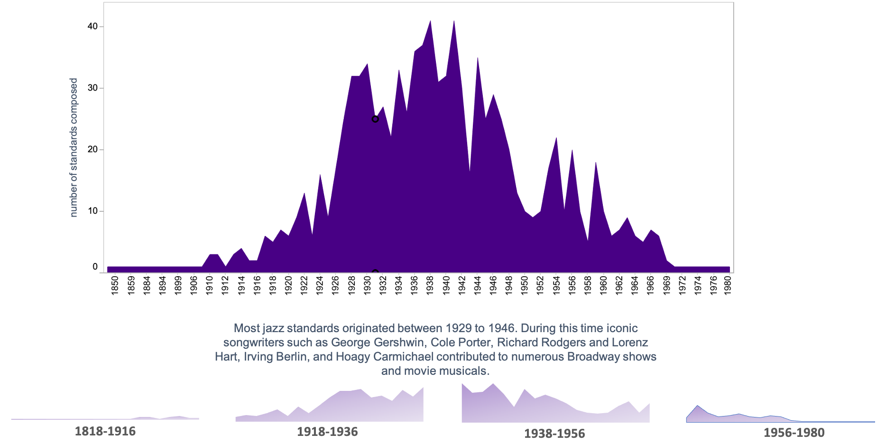

The terms “standard” and “jazz standard” are often used when one is referring to popular and jazz music compositions and the definitions of these terms can vary widely. So what is a standard? Comparing definitions from a number of dictionaries and music scholars and basing a definition on the points on which they are in agreement, it is reasonable to state: A “standard” is a composition that is held in continuing esteem and is commonly used in musical repertoires. And, A “jazz standard” is a composition that is held in continuing esteem and is commonly used as the basis of jazz arrangements and improvisations.
Sometimes the term “jazz standard” is used to imply a jazz composition that has become a standard with general acceptance, one that allows compositions from any origin. For example, consider the following sheet music collection titled "Jazz Standards":
All the Things You Are, Autumn in New York, Bewitched, Cry Me a River, Don’t Get Around Much Anymore, A Fine Romance, I Can’t Get Started With You, I’ve Got You Under My Skin, The Lady Is a Tramp, Manhattan, Misty, My Funny Valentine, Old Devil Moon, Prelude to a Kiss, Route 66, Smoke Gets in Your Eyes, There’s a Small Hotel
The majority of these “jazz standards” were not originally jazz compositions. When music publishers include the term “jazz standards” in a description or title they almost always are referring to compositions used as the foundation for jazz arrangements or improvisations, regardless of whether or not they were written by a jazz composer. In general, music authors and theorists also favor this broader definition.
The Rise and Fall of the Jazz Standard

Jazz standards peaked in the two decades between 1927 to 1947. The greatest number composed and recorded are ranked in popularity. The rise of Broadway musicals during this time was the biggest contributor to the popularity of jazz standards.
Richard Rodgers, #1 Jazz Standards Composer
Richard Charles Rodgers was an American composer, known largely for his work in musical theater. With 43 Broadway musicals and over 900 songs to his credit, Rodgers was one of the most significant American composers of the 20th century, and his compositions had a significant impact on popular music. Lorenz Milton Hart was the lyricist half of the Broadway songwriting team Rodgers and Hart. Some of his more famous lyrics include "Blue Moon", "The Lady Is a Tramp", "Manhattan", "Bewitched, Bothered and Bewildered", and "My Funny Valentine". Here are his compositions over time, with the song ranking (1-1000) appearing on the right.
Which composers also wrote the lyrics?
A song is a miniature drama — a short story told to music. The notes may stir the soul, but it's the lyrics that pierce the heart.
The popularity of jazz in its golden age owes much to the great American songbook. Writers such as Hoagy Carmichael, Cole Porter, and Irving Berlin created rich yet refined lyrical dramas. Singers including Sarah Vaughan, Ella Fitzgerald, and Jon Hendricks animated the lyrics and melodies with the improvisational spark of jazz.
A good lyricist is a poet, encapsulating a feeling in a concise slice of life. Here are fifteen of the top composers and the partner who wrote the lyrics. Irving Berlin was the one composer who exclusively wrote his own lyrics.
It's All About Me and You
What are common themes in jazz standards? Jazz lyrics speak of the troubles and triumphs of every day life, from sex to money, from cooking to drinking, from infidelity and abuse, to romantic love and sexual conquest. Some of the most common themes, found in the composition's titles, are about me, you, love, and feeling blue.
The #1 Jazz Standard of All Time
While in London, Hollywood songwriter/conductor Johnny Green wrote “Body and Soul” for Gertrude Lawrence. Jack Hylton & His Orchestra recorded the ballad first in Britain, but it was Paul Whiteman and His Orchestra (Jack Fulton, vocal) who popularized it. Their recording hit the charts on October 11, 1930, and held the number one spot for six weeks.
On October 15th, 1930, “Body and Soul” appeared in the Broadway revue, Three’s a Crowd. The show would run for 272 performances with Libby Holman performing the song as Clifton Webb danced. “Body and Soul” was one of the revue’s standout songs, and Holman’s recording rose to number three on the recording charts.
Although instantly popular, “Body and Soul” was banned from radio for nearly a year because of its suggestive lyrics, which leave little doubt as to their sexual nature. In spite of, or possibly because of, its racy lyrics, an astounding number of renditions made the charts in the 1930s and 1940s